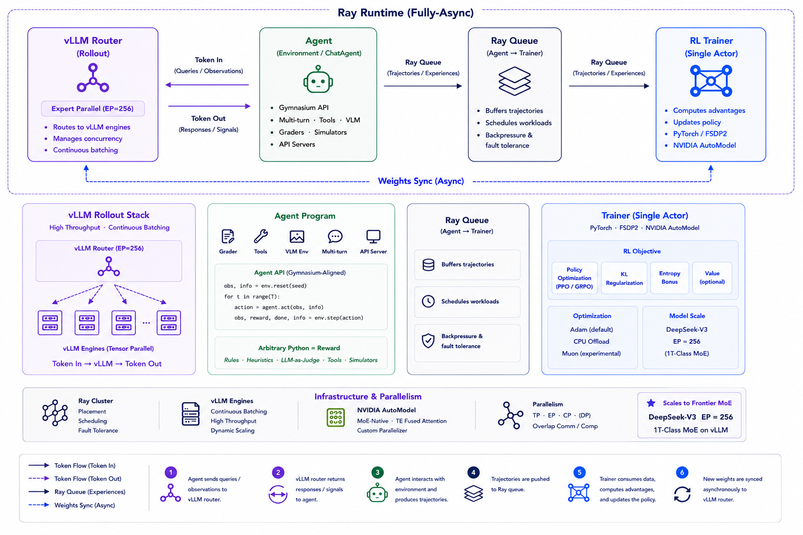

Molt: NVIDIA's PyTorch-Native Agentic RL Framework
Paper: "Molt: A Scalable PyTorch-Native Training Framework for Agentic Reinforcement Learning" (arXiv 2607.21653, tech report). Authors: Jian Hu, Huiying Li, Hao Zhang, Binfeng Xu, Yifan Zhang, Shaokun Zhang, Hemil Desai, Michael Demoret, Pavlo Molchanov, Jan Kautz, Yi Dong (NVIDIA). Code, recipes, and containers: github.com/NVIDIA-NeMo/labs-molt (Apache 2.0). Notably, Jian Hu is the original author of OpenRLHF.
TL;DR
- Molt is an agentic RL training framework whose stated design constraint is unusual: the RL core (~8.6K lines, PyTorch-native, one backend) should be small enough for a researcher — or an AI coding assistant — to read, trace end-to-end, and modify per-experiment.
- The system is "three components and one loop": Ray for orchestration, vLLM for rollout, NVIDIA AutoModel + FSDP2 for training, joined by a fully asynchronous streaming loop with three enforced invariants — token identity (train on exactly the sampled token ids, never a retokenized transcript), policy-version semantics (per-token importance correction across async weight updates), and forward consistency (including MoE routing replay).
- Leanness does not cost throughput: under a matched fully-async protocol on Qwen3-30B-A3B, Molt is statistically comparable to slime (Megatron-Core + SGLang) — 119.4±2.3 vs. 109.5±10.3 s/optimizer step — and the same loop scales to 700B-class MoE at expert parallelism 256.
Why this matters
Agentic RL research is a loop of algorithm mutation: new advantage estimators, new async rollout schemes, new pipeline stages, new correction terms. In the dominant production frameworks, each mutation threads through layered trainer abstractions, a distributed backend (often Megatron), and rollout glue — verl is ~62K lines of RL code, and the cost of understanding what actually happens to a token between sampling and gradient falls on the researcher at every iteration. For anyone doing long-horizon agent training, there is a second, sharper problem: agentic rollouts are multi-turn, tool-interleaved, sometimes multimodal, and increasingly generated by external harnesses (browser drivers, evaluation frameworks, the agent's own SDK loop). Bolting those onto trainer-centric frameworks produces exactly the silent correctness bugs that poison RL runs — retokenization drift between rollout and training, stale-policy tokens treated as on-policy, train/inference mismatch in MoE routing.
Molt's bet is that the framework layer, not the algorithm layer, is the bottleneck, and that the fix is subtraction: one backend, one data path, explicit invariants, and a codebase sized for full comprehension. The tech report makes "readable by an AI coding assistant" a stated design constraint on research infrastructure — a genuinely new criterion, and a plausible one now that most algorithm modifications are co-written with coding agents.
The core idea
The agent is an ordinary program, and the framework's job reduces to guaranteeing that every trained token is exactly the token that was generated — at the right policy version, under the same model semantics. Everything else (async scheduling, backends, parallelism) is deliberately kept to the minimum that preserves throughput. Instead of the framework owning agent control flow through callback hierarchies, agents stay decoupled Python: either an Env with a step() function (framework owns the LLM loop), or a ChatAgent where the user's own loop — written against stock OpenAI/Anthropic SDKs — is pointed at a loopback server that captures the traffic as tokens. Existing harnesses work unchanged by pointing at ctx.base_url. Both forms feed one chat-format data path.

Figure from the paper: "The whole system: three components and one loop. Molt composes user agents in plain Python, vLLM rollout engines behind a request router, and a single FSDP2 policy actor on NeMo AutoModel around one Ray asynchronous queue... Trajectories flow token-exactly from the engines through the queue into training."
How it works
The async loop. A persistent streaming pool keeps prompt groups (all rollouts of one prompt) in flight continuously. As soon as enough groups complete, a training batch is emitted — engines are never drained. When the actor's weights update, engines pause, actor shards broadcast, and retained in-flight requests resume; tokens generated under the older policy are handled by per-token importance-sampling correction with a sequence-level gate rather than being discarded. Rollout, training, and weight sync overlap throughout.
# Molt's async streaming loop (persistent; engines never drained)
spawn: vLLM engines behind a router | FSDP2 actor (AutoModel) | Ray queue
streaming pool: keep prompt groups (all G rollouts of one prompt) in flight
loop:
agents run as plain Python (Env.step() or user SDK loop -> loopback URL)
engines stream token ids + behavior logprobs + rewards -> queue # token identity
when enough groups complete:
emit training batch (may mix policy versions)
A <- advantage_fn(rewards, groups) # pure function: R++/GRPO/RLOO/...
DAPO-style filter degenerate groups; backfill
importance-correct stale tokens per token;
sequence-level gate rejects over-divergent samples # policy-version
replay MoE routing captured at rollout time # forward consistency
loss <- global whole-batch token mean; optimizer step
on weight update:
pause engines -> NCCL-broadcast actor shards -> resume in-flight requests
The tech report describes the correction machinery in prose rather than numbered equations; in standard notation (reconstruction — verify against the paper):
the per-token importance ratio, where \(\pi_{\mathrm{behavior}}\)'s logprobs are the ones recorded at generation time (invariant 2 below); the sequence-level gate drops samples whose aggregate ratio falls outside a tight band (the paper cites a gate range of [0.99, 1.01], following masked-importance-sampling practice).
the global whole-batch token mean (reconstruction — verify against the paper): \(m_{b,t}\) masks non-action tokens, and the single shared denominator — the unmasked-token count of the whole optimizer-step window — is used for the policy-gradient, KL, and entropy terms alike, making the loss invariant to data-parallel size and gradient-accumulation depth.
Three correctness invariants, enforced structurally rather than by convention:
- Token identity. The sampled token ids define the trajectory. Ids, logprobs, and rewards flow token-exactly from the vLLM engines through the queue into the FSDP2 actor; text never re-enters a tokenizer mid-episode. This kills the classic retokenization-mismatch bug class in multi-turn agentic RL.
- Policy-version semantics. Action tokens carry the behavior-policy logprobs recorded at generation time. Async batches that mix policy versions get per-token importance correction; the sequence-level gate rejects samples whose divergence is too large to correct.
- Forward consistency. Rollout and training must agree on model semantics, including multimodal rendering and MoE expert routing. Molt captures routing decisions server-side during rollout and replays them during training, preventing divergent sparse computation graphs between the two stacks.
Algorithms as pure functions. Advantage estimators — REINFORCE++ (default), RLOO, GRPO, Dr. GRPO, PPO with GAE, plus on-policy distillation — are selected by flag; adding one is "one pure function of rewards and groups." DAPO-style dynamic filtering removes degenerate groups and backfills. Loss normalization is a global whole-batch token mean, invariant to data-parallel size and gradient-accumulation depth (another classic source of silent irreproducibility).
Scale features. AutoModel-native tensor/expert/context parallelism (Qwen3.x, DeepSeek-V3-class 1T MoE, Nemotron-Omni, GLM-5.2 in recipes); prefix caching (0.05 s re-prefill on hits); speculative decoding with an MTP head (generation 329 s → 64 s on the 35B workload); optimizer CPU offload (peak GPU memory 64.7 → 46.4 GB for +18% step time).
Results
This is a systems paper; the results are throughput and complexity, not benchmark accuracy.
- Matched async comparison. Molt (AutoModel + vLLM) vs. slime (Megatron-Core + SGLang) on Qwen3-30B-A3B, fully async, disaggregated 8+8 GPUs (train+rollout), micro-batch 1, no reference model, identical optimizer, 16K context / 8K response, DAPO-Math prompts: 119.4±2.3 vs. 109.5±10.3 s per optimizer step over three runs — statistically comparable (slime's spread 102-121 s overlaps Molt's band), both ~460-502 tokens/GPU/s. Note the honest caveat: a distributed-MoE forward mismatch in the 30B checkpoint (~1 nat logprob divergence) trips the sequence gate, so these step times measure throughput without effective policy updates; the 35B workload shows no such gap.
- Codebase size (import-graph tracing from RL entry points, excluding SFT/DPO/tests/docs): Molt ~8.6K LOC (single backend), OpenRLHF ~7.2K (DeepSpeed), slime ~25K, verl ~62K (multi-backend). The tweet's "compact enough to hold in your head" claim is this table.
- Scale demonstration. The same loop runs end-to-end on 700B-class MoE at EP256; only throughput, not convergence, is reported at that scale.
How it connects
Within this reading list, Molt is the trainer node of the agentic-RL infrastructure cluster. OSGym is the complementary environment side — 1,024 parallel OS sandboxes at $0.23/sandbox/day feeding trajectories; a Molt-style trainer plus OSGym-style env farm is roughly the full computer-use RL stack. AgentGym-RL and the online multi-turn RL for visual web agents entries are the algorithm/recipe layer that would run on top. The prime-RL async RL reading list entry covers the same async-correctness design space (staleness, importance correction) that Molt's invariants formalize. "Training Agents Inside Their Harnesses" (Microsoft) is philosophically aligned with Molt's ChatAgent form: the harness the agent ships with is the harness it should be trained in, which requires exactly the token-capture-behind-an-SDK trick Molt implements. Algorithm papers in the list — TRACE (custom advantage mixing), DAPO-style filtering — are the kind of per-experiment modifications Molt's "one pure function" claim targets. And the Harness Handbook / readable-harness thread in the self-improving cluster mirrors Molt's core thesis at the framework level: legibility (to humans and to coding agents) is a first-class engineering property now.
Against prior work: this is a direct descendant of the OpenRLHF lineage (same lead author), positioned against verl/HybridFlow's multi-backend generality and Megatron-based production stacks (slime). The token-identity and routing-replay invariants address failure modes that the community has mostly learned about through painful debugging threads rather than papers.
Critical take
- The headline comparison has an asterisk the authors themselves flag: in the 30B benchmark the sequence gate rejects batches due to a train/inference MoE mismatch, so "statistically comparable step time" is measured without effective policy updates. Convergence parity — the thing that actually matters — "awaits upstream correction" and is unproven at both 30B and 700B scale.
- LOC is a rhetorically convenient metric. Molt counts ~8.6K by import-graph tracing while pushing complexity into dependencies it doesn't count: vLLM, Ray, AutoModel/FSDP2 are enormous. The claim that matters is narrower and more defensible: the researcher-touched surface is small and single-path. Also note OpenRLHF is smaller by the same metric; Molt's differentiation there is the invariants and scale features, not size.
- Deliberate narrowness cuts both ways. One training backend (AutoModel), one rollout engine (vLLM), no forks. If your lab is SGLang-based, needs Megatron-specific parallelism recipes, or wants multi-version serving schedulers / elastic environment services, Molt explicitly does not claim to cover you.
- No algorithmic novelty is claimed — REINFORCE++, GRPO, DAPO etc. are implementations. Judge this as infrastructure, and note the evaluation gap common to all RL frameworks papers: no demonstration that a real agentic task (not DAPO-Math) trains to a strong result end-to-end in the report.
- Open questions: does routing replay stay tractable and correct as MoE architectures evolve (shared experts, aux-loss-free routing)? How much staleness can the per-token correction + gate actually absorb before learning degrades — is there a measured staleness/quality curve? And does the "readable by a coding assistant" constraint hold as features accrete, or is 8.6K LOC a launch-day artifact?
If you remember three things
- Molt's real contribution is three enforced invariants for async agentic RL — train only on sampled token ids, correct per-token for policy-version drift with a sequence gate, replay MoE routing between rollout and training — which name and structurally prevent the silent bug classes that dominate agentic RL debugging.
- Agents remain ordinary programs: an
Env.step()or your own SDK loop against a loopback URL that captures tokens — existing harnesses train unchanged, which is the right abstraction for long-horizon, tool-heavy agents. - Throughput parity with a Megatron-based stack at ~4x less researcher-facing code is credible, but convergence at scale is not yet demonstrated — the 30B comparison measures step time while the sequence gate is rejecting updates.